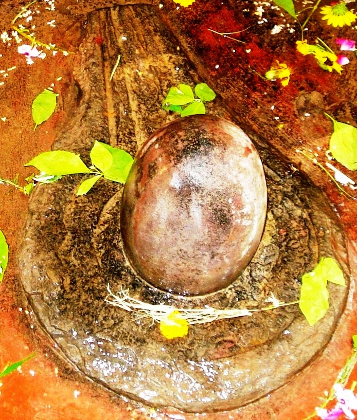

<?xml version="1.0" encoding="UTF-8"?><rss version="2.0"
	xmlns:content="http://purl.org/rss/1.0/modules/content/"
	xmlns:wfw="http://wellformedweb.org/CommentAPI/"
	xmlns:dc="http://purl.org/dc/elements/1.1/"
	xmlns:atom="http://www.w3.org/2005/Atom"
	xmlns:sy="http://purl.org/rss/1.0/modules/syndication/"
	xmlns:slash="http://purl.org/rss/1.0/modules/slash/"
	>

<channel>
	<title>Nal Koopeshwar &#8211; Varanasi Temples</title>
	<atom:link href="index.html" rel="self" type="application/rss+xml" />
	<link>../../../../../index.html</link>
	<description>Temples of Varanasi as referred to in Kashi Khand</description>
	<lastBuildDate>Thu, 19 Jun 2025 05:16:46 +0000</lastBuildDate>
	<language>en-US</language>
	<sy:updatePeriod>hourly</sy:updatePeriod>
	<sy:updateFrequency>1</sy:updateFrequency>
	<generator>https://wordpress.org/?v=4.6.29</generator>
	<item>
		<title>NAL KOOPESHWAR (NAL KUBERESHWAR)</title>
		<link>../../../../../shiva-temples/nal-koopeshwar-nal-kubereshwar/index.html</link>
		<pubDate>Mon, 10 May 2010 15:23:41 +0000</pubDate>
		<dc:creator><![CDATA[admin]]></dc:creator>
				<category><![CDATA[Nal Koopeshwar]]></category>
		<category><![CDATA[Other Shiva Temples (L-R)]]></category>
		<category><![CDATA[Shiva Temples]]></category>
		<category><![CDATA[gubereashwar]]></category>
		<category><![CDATA[panchal]]></category>
		<category><![CDATA[teerth]]></category>

		<guid isPermaLink="false">../../../../../p=420.html</guid>
		<description><![CDATA[On a question raised by Goddess Parvaty, Lord Shiva was describing the various sacred Teerths (Ponds), Koop (Wells) and places of worship in Kashi.  Lord Shiva described such places with pleasure (Kashi Khand, Chapter 97). According to Lord Shiva, towards the east of Kameshwar there is one Nal Koop Ling and in front of that [&#8230;]]]></description>
				<content:encoded><![CDATA[<p>On a question raised by Goddess Parvaty, Lord Shiva was describing the various sacred Teerths (Ponds), Koop (Wells) and places of worship in Kashi.  Lord Shiva described such places with pleasure (Kashi Khand, Chapter 97).</p>
<p>According to Lord Shiva, towards the east of Kameshwar there is one Nal Koop Ling and in front of that Ling is a well called Nal Koop.  Taking bath in Nal Koop and worshipping Nal Koop ling will yield good crops and wealth to the devotees.</p>
<p></p>
<p style="text-align: center;"><strong>(NAL KOOPESHWAR)</strong></p>
<p>India is an agrarian country and getting good crops and grains tantamounts to getting good wealth.  So, much importance has been attached by old timers for good crops.</p>
<p><strong><span style="text-decoration: underline;">LOCATION OF NAL KOOPESHWAR</span></strong></p>
<p>Nal Koop Ling is located at K-30/6 Ghasi Tola.  Old timers believe that old name of Nal Koopeshwar was Panchalkeshwar which was existing to the east of Kameshwar but now the same has disappeared.  The present Ling has been installed in the premises described above.</p>
<p>But the compiler wishes to state that the name of Nal Koop Ling is very much mentioned in Kashi Khand but no name of Panchalkeshwar could be traced.  The devotees may draw their own conclusion.</p>
<p>Regarding re-installing the Ling, it may be mentioned that there was a period when many temples were destroyed by various invaders and the devotees hid some Shiv Lings and Pooja idols at some inconspicuous places other than the temples.  In due course of time (say 100 – 200 years) the new places became their permanent sites.</p>
<p>Presently, Nal Koop Ling is located in a private house but devotees can worship the Ling through a grilled door. When the place was visited, the compiler was allowed to perform a small abhishek (pouring sacred Ganges water) on the Shiv Ling and offer flowers etc. to Lord Shiva.</p>
<p>Nal Koop (Well) is presently existing, as stated in Kashi Khand, in front of Nal Koop Ling.</p>
<p>Devotees can reach this temple by travelling upto Bhairo Nath by rickshaw and then by foot through the Gullies.</p>
]]></content:encoded>
			</item>
	</channel>
</rss>
